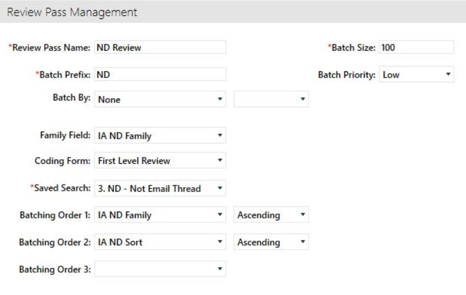

Review all documents in every near duplicate group
by grouping all documents into the same batch. First, in Eclipse Web, you must create and save a search that identifies near duplicates. Once this is completed, in Case Administration, you create the review pass and select the reference your saved search as the search results to use for the batch creation.
-
In Eclipse Web, navigate to Advanced
Search and select:
-
Create
a new search entitled Near Duplicate
Batches.
-
Under the Include drop-down, select Family to ensure
that family relationships will be maintained.

-
The criteria of the search should identify
all families that received a Near Duplicate value. This can be accomplished
by searching for any documents where the IA ND Family
field contains a value.
- Save the search.
-
In Case Administration
select Review Pass Management and the
Plus button.
- Name the Review Pass and enter
a Batch Prefix.
-
Enter
the Batch Size of your choice.
- Set
the Family Field to IA ND Family
to ensure all Near Duplicates are kept together.
- Choose
the Saved Search you previously created, titled Near Duplicate Batches.
- Sort
your Review Pass by IA ND Sort
ascending
- Select
Save
-
Select
Create Batches in the bottom right
corner.
